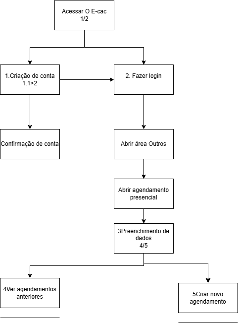
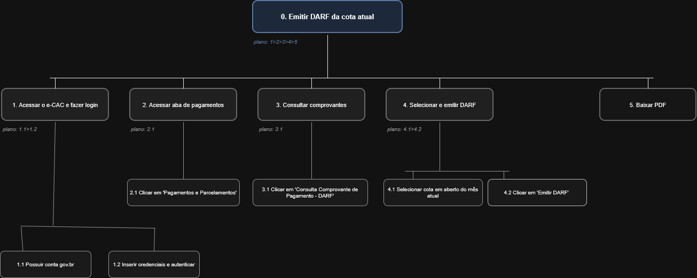
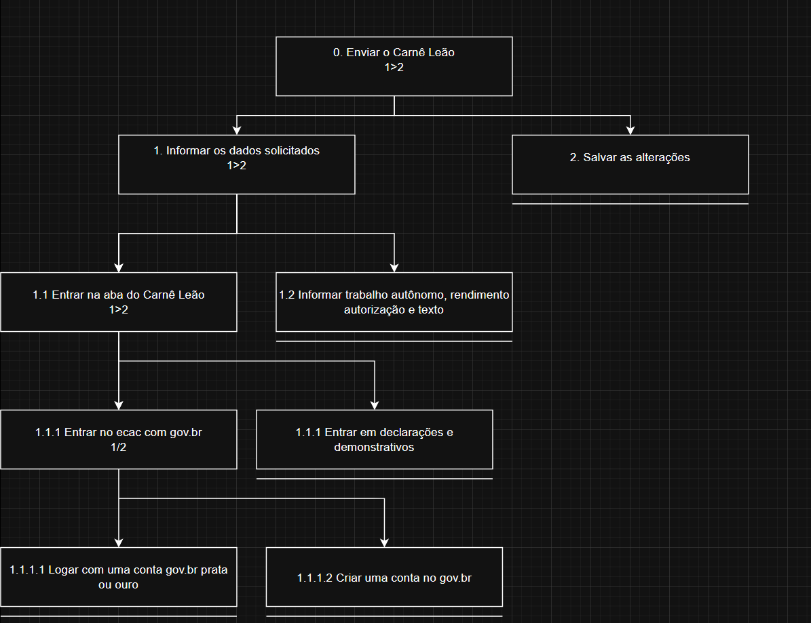
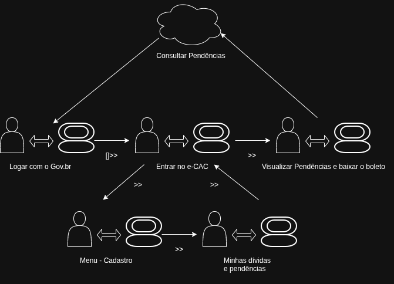

Análise de Tarefas
Introdução
A análise de tarefas é uma prática fundamental em IHC voltada para o entendimento profundo do trabalho dos usuários: o que eles fazem, como fazem e por quais motivos. Ela define o trabalho em termos dos objetivos que as pessoas precisam atingir e das ações necessárias para alcançá-los.
Dentro das técnicas de análise de tarefas pode-se citar:
- HTA (Análise Hierárquica de Tarefas): Decompõe objetivos complexos em subobjetivos e operações, relacionando o que as pessoas fazem, por que o fazem e quais as consequências de possíveis erros.
- GOMS (Goals, Operators, Methods, and Selection Rules): Descreve o conhecimento necessário para tarefas rotineiras através de objetivos e métodos, permitindo prever o desempenho de usuários competentes em sistemas computacionais.
- Árvores de Tarefas Concorrentes (CTT): Representa graficamente a hierarquia das tarefas e as relações temporais e lógicas de concorrência entre as ações realizadas pelo usuário e pelo sistema.
Tabela de contribuição
Segue na tabela 1, a contribuição de cada membro da equipe sobre essa etapa:
Tabela 1 - Tabela de contribuição
| Autor | Análises realizadas | Data |
|---|---|---|
| Heyttor Augusto | HTA 1.1, HTA 1.2 e GOMS -2.1 | 02/05/2026 |
| João Morais | CTT - 3.1 e GOMS-2.2 | 02/05/2026 |
| Rafael Melatti | HTA 1.4 e Análise GOMS 2.3 | 02/05/2026 |
| Thiago Gomes | Criação da HTA 1.3 e Análise GOMS- 2.4 | 02/05/2026 |
| Lucas Gabriel | Criação das HTA 1.5 e 1.6, e Análise GOMS 2.5 | 03/05/2026 |
| João Morais | Referências Bibliográficas | 08/05/2026 |
HTA - Análise Hierárquica de Tarefas
1.1 - Alteração de endereço vinculado ao CPF
Na imagem 1.1, é possível observar o diagrama para a tarefa de alteração de endereço, e logo depois na tabela 1.1 para explicar o diagrama, seguindo modelo de BARBOSA (2021, p. 194) [ref.]
Imagem 1.1 - Alteração de endereço

Autor: Heyttor Augusto
Tabela 1.1 - Alteração de endereço, baseado no modelo de BARBOSA (2021, p. 194)[ref.]
| Objetivos e operações | Problemas e recomendações |
|---|---|
| 0. Acessar o E-cac | feedback: ser jogado na página de login |
| 1. Criação de conta | input: dados de cadastro feedback: usuário redirecionado para a página de confirmação de email. plano: confirmar conta e depois fazer login. |
| 1.1 Confirmação de conta | feedback: após confirmar o email o usuário é liberado para fazer login. |
| 2. Fazer login | input: dados de login. feedback: usuário redirecionado para a página de meu painel. plano: abrir área cadastros. |
1.2 - Agendamento
Na imagem 1.2, é possível observar o diagrama para a tarefa de cadastro de atendimento presencial, e logo depois na tabela 1.2 para explicar o diagrama, seguindo modelo de BARBOSA (2021, p. 194) [ref.].
Imagem 1.2 - Agendamento presencial

Autor: Heyttor Augusto
Tabela 1.2 - Agendamento Presencial, baseado em BARBOSA (2021, p. 194)[ref.]
| Objetivos e operações | Problemas e recomendações |
|---|---|
| 0. Acessar o E-cac | feedback: ser jogado na página de login |
| 1. Fazer login | input: dados de login. feedback: usuário redirecionado para a página de meu painel. |
| 2. Selecionar agendamento | input: clique em agendamento presencial. |
| 3. Preenchimento de dados | input: dados do usuário. problema: se o usuário não tiver agendamentos não aparecerá nada na tela |
1.3 - Emissão de DARF para pagamento de cota do IRPF
Na imagem 1.3, é possível observar o diagrama para a tarefa de emissão de um DARF de cota vigente, detalhado na tabela 1.3, , seguindo modelo de BARBOSA (2021, p. 194) [ref.].
Imagem 1.3 - Emissão de DARF

Autor: Thiago Gomes
Tabela 1.3 - Emissão de DARF, conforme em BARBOSA (2021, p. 194)[ref.]
| Objetivos e operações | Problemas e recomendações |
|---|---|
| 0. Emitir DARF da cota atual | plano: 1>2>3>4>5 — fazer login no e-CAC, navegar até pagamentos, consultar comprovantes, selecionar e gerar o DARF, baixar o PDF. |
| 1. Acessar o e-CAC e fazer login | plano: 1.1>1.2. input: credenciais gov.br. feedback: direcionamento à tela inicial do e-CAC. |
| 1.1 Possuir conta gov.br | pré-condição: usuário deve ter cadastro ativo no gov.br. |
| 1.2 Inserir credenciais e autenticar | input: CPF e senha ou certificado digital. feedback: acesso concedido. |
| 2. Acessar aba de pagamentos | plano: 2.1. input: clique em "Pagamentos e Parcelamentos". feedback: carregamento das opções de pagamento. |
| 2.1 Clicar em "Pagamentos e Parcelamentos" | input: clique no menu lateral. feedback: expansão das opções. |
| 3. Consultar comprovantes | plano: 3.1. input: clique em "Consulta Comprovante de Pagamento - DARF". feedback: listagem de cotas disponíveis. |
| 3.1 Clicar em "Consulta Comprovante de Pagamento - DARF" | input: clique no item de menu. feedback: lista de cotas carregada. |
| 4. Selecionar e emitir DARF | plano: 4.1>4.2. problema: sistema pode demorar a carregar a lista de cotas. recomendação: aguardar carregamento completo antes de interagir. |
| 4.1 Selecionar cota em aberto do mês atual | input: clique na cota correspondente. feedback: cota destacada/selecionada. |
| 4.2 Clicar em "Emitir DARF" | input: clique no botão. problema: lentidão no carregamento. feedback: documento gerado na tela. |
| 5. Baixar PDF | input: clique no botão de download. feedback: arquivo salvo no dispositivo do usuário. |
1.4 - Preencher o Carnê Leão
Na imagem 1.4, é possível observar o diagrama para a tarefa de alteração de endereço, e logo depois na tabela 1.1 para explicar o diagrama, conforme em BARBOSA (2021, p. 194)[ref.].
Imagem 1.4 - Carnê Leão

Autor: Rafael Melatti
Tabela 1.4 - Carnê Leão, conforme em BARBOSA (2021, p. 194)[ref.]
| Objetivos e operações | Problemas e recomendações |
|---|---|
| 0. Enviar o Carnê Leão 1>2 | plano: informar os dados solicitados e depois salvar as alterações |
| 1. Informar os dados solicitados 1>2 | plano: entrar na aba do Carnê Leão e informar trabalho autônomo, rendimento, autorização e texto |
| 1.1 Entrar na aba do Carnê Leão 1>2 | plano: entrar no e-CAC com gov.br e depois entrar em declarações e demonstrativos |
| 1.1.1 Entrar no e-CAC com gov.br 1/2 | plano: logar com conta gov.br prata ou ouro ou criar uma conta no gov.br problema: usuário pode não saber qual nível de conta é exigido antes de tentar o acesso recomendação: exibir aviso completo (atualmente não diz tudo que precisa desse nível) informando o nível mínimo necessário (prata ou ouro) antes da tela de login |
| 1.1.1.1 Logar com uma conta gov.br prata ou ouro | plano: Fazer o login feedback: redireciona para a página inicial |
| 1.1.1.2 Criar uma conta no gov.br | feedback: redireciona para a página inicial |
| 1.1.1 Entrar em declarações e demonstrativos | problema: localização da seção dentro do e-CAC pode não ser intuitiva recomendação: mudar organização das funções do site |
| 1.2 Informar trabalho autônomo, rendimento, autorização e texto | input: dados do usuário |
| 2. Salvar as alterações | problema: usuário pode encerrar a sessão sem salvar, perdendo os dados preenchidos e sem feedback recomendação 1: implementar salvamento automático periódico recomendação 2: exibir alerta de confirmação ao tentar sair sem salvar recomendação 3: adicionar feedback |
1.5 - Emissão de Certidão Negativa de Débitos (CND)
Na Tabela 1.5, é possível observar a decomposição da tarefa de emissão de uma Certidão Negativa de Débitos (CND) no e-CAC. A análise visa identificar principalmente como o sistema possibilita ou impede o usuário de alcançar seus objetivos. Além disso, a análise levanta problemas potenciais e elabora recomendações focadas na melhoria da interface.
Imagem 1.5 - Emissão de Certidão Negativa de Débitos (CND). Referência: BARBOSA (2021, p. 194)[ref.]

Autor: Lucas Gabriel
Tabela 1.5 - Emissão de Certidão Negativa de Débitos (CND), referência: BARBOSA (2021, p. 194)[ref.]
| Objetivos e operações | Problemas e recomendações |
|---|---|
| 0. Emitir Certidão Negativa de Débitos (CND) | plano: fazer login, acessar a seção de certidões, solicitar o documento e realizar o download. |
| 1. Acessar o e-CAC e fazer login | input: credenciais gov.br. feedback: usuário é autenticado e redirecionado para a tela inicial (Meu Painel). |
| 2. Acessar aba de certidões | input: clique na aba "Certidões e Situação Fiscal". feedback: carregamento do menu com as opções de certidões disponíveis. |
| 3. Consultar e solicitar CND | input: clique em "Consulta Pendências - Situação Fiscal" ou "Emitir Certidão". problema: se houver pendências ativas (débitos), o sistema simplesmente bloqueia a emissão da CND com uma mensagem genérica, deixando o usuário sem saber o que fazer. recomendação: exibir uma mensagem de erro clara especificando qual é a pendência impeditiva e fornecer um botão de atalho/link direto para a aba de emissão de DARF ou regularização da dívida. |
| 4. Baixar PDF da Certidão | input: clique no ícone de download ou imprimir. feedback: o arquivo PDF da certidão é gerado e salvo no dispositivo local do usuário. |
1.6 - Cadastro de Procuração Eletrônica
A Análise Hierárquica de Tarefas ajuda a relacionar o que as pessoas fazem, por que o fazem, e quais as consequências caso não o façam corretamente, auxiliando na identificação de problemas de desempenho. Na Tabela 1.6, aplicamos essa decomposição para o cadastro de procurações, uma tarefa que exige atenção do usuário ao delegar poderes a terceiros. Referência: BARBOSA (2021, p. 194)[ref.]
Imagem 1.6 - Cadastro de Procuração Eletrônica

Autor: Lucas Gabriel
Tabela 1.6 - Cadastro de Procuração Eletrônica. Referência: BARBOSA (2021, p. 194)[ref.]
| Objetivos e operações | Problemas e recomendações |
|---|---|
| 0. Cadastrar Procuração Eletrônica | plano: fazer login, acessar a área de procurações, preencher os dados do procurador, selecionar os poderes e assinar digitalmente. |
| 1. Acessar o e-CAC e fazer login | input: credenciais gov.br. feedback: usuário redirecionado ao "Meu Painel". |
| 2. Acessar a seção de Senhas e Procurações | input: clique em "Senhas e Procurações" e depois em "Cadastro, Consulta e Cancelamento - Procuração para e-CAC". |
| 3. Preencher dados do Outorgado | input: digitar o CPF ou CNPJ do procurador e definir o tempo de vigência. problema: o sistema não valida o nome do procurador em tempo real após a digitação do CPF, causando insegurança. recomendação: exibir o nome atrelado ao CPF/CNPJ automaticamente após o preenchimento, confirmando a identidade do procurador. |
| 4. Selecionar os poderes a serem delegados | input: marcar as caixas de seleção (checkboxes) dos serviços específicos ou a opção "Todos os serviços". problema: a lista de serviços é extremamente longa e com termos técnicos difíceis para usuários leigos. recomendação: agrupar os serviços por categorias expansíveis (ex: "Declarações", "Pagamentos", "Processos") com uma breve tooltip de explicação ao lado de cada um. |
| 5. Assinar digitalmente o documento | input: clique em "Cadastrar" e assinar pelo aplicativo gov.br ou certificado digital. feedback: mensagem de sucesso e geração do comprovante da procuração. |
GOMS (Goals, Operators, Methods and Selection Rules)
2.1 - Autorização da visualização de dados
Nessa tarefa, o usuário possui o objetivo de autorizar a visualização de seus dados para empresas, por certo período de tempo.
- GOAL 0: Fazer login na página para visualizar a página PRONAMPE
- GOAL 1: Acessar aba meu painel
- OP 1.1: Guiar o mouse para a aba meu painel
- OP 1.2: Pressionar o botão
- GOAL 2: Selecionar a opção compartilhar meus dados
- OP 2.1: Guiar o mouse para a opção 'autorizar compartilhamento'
- OP 2.2: Clicar na opção
- GOAL 3: Criar uma nova autorização
- OP 3.1: Guiar o mouse para a opção 'autorizar compartilhamento'
- OP 3.2: Clicar na opção
- OP 3.3: Guiar o mouse para a "próxima etapa"
- OP 3.4: Clicar na opção
- GOAL 4: Selecionar o tipo de dado a ser compartilhado
- OP 4.1: Guiar o mouse para a opção 'Selecionar tipo de dado'
- OP 4.2: Clicar na opção
- OP 4.3: Guiar o mouse para a "próxima etapa"
- OP 4.4: Clicar na opção "próxima etapa"
- GOAL 5: Selecionar a data limite do compartilhamento
- OP 5.1: Digitar a data limite
- OP 5.2: Guiar o mouse para a "próxima etapa"
- OP 5.3: Clicar na opção "próxima etapa"
- GOAL 6: Selecionar a empresa que vai ter o compartilhamento
- OP 6.1: Guiar o mouse para a opção 'Destinatário para a leitura'
- OP 6.2: Guiar o mouse dentre as opções disponíveis
- OP 6.3: Digitar na barra de pesquisa a empresa desejada
- OP 6.4: Clicar na opção
- OP 6.5: Guiar o mouse para a "próxima etapa"
- OP 6.6: Clicar na opção "próxima etapa"
- GOAL 7: Autorizar o compartilhamento
- OP 7.1: Guiar o mouse para "autorizar"
- OP 7.2: Clicar na opção
- GOAL 1: Acessar aba meu painel
Referência: BARBOSA, (2021, p. 200)[ref.].
2.2 - Meu Imposto de Renda
Nessa tarefa, o usuário possui o objetivo de Declarar seu imposto de renda.
- GOAL 0: Fazer login na página para visualizar a aba de "serviços mais acessados"
- GOAL 1: Acessar o menu principal
- OP 1.1: Clicar em "entrar com meu gov.br"
- OP 1.2: Preencher os dados
- OP 1.3: Pressionar o botão de confirmar
- GOAL 2: Selecionar a opção "Meu Imposto de Renda" no meu "Serviços mais acessados"
- OP 2.1: Clicar em Serviços do IRPF
- OP 2.2: Clicar na opção "Fazer Declaração"
- OP 2.3: Clicar no ano de declaração
- GOAL 3: Fazer a declaração
- OP 3.1: Clicar em cada categoria, uma por vez
- OP 3.2: Preencher os dados da categoria
- OP 3.3: Preencher todas as categorias, conforme os passos anteriores
- GOAL 4: Enviar Declaração
- OP 4.1: Clicar em "Entrega - Enviar Declaração"
- GOAL 1: Acessar o menu principal
Referência: BARBOSA, (2021, p. 200)[ref.].
2.3 - Leilão da Receita Federal
Nessa tarefa, o usuário possui o objetivo de dar um lance em um leilão da Receita Federal.
- GOAL 0: Fazer login no portal e-CAC para ter acesso a função do leilão
- GOAL 1: acessar o sistema oficial de leilão.
- OP 1.1: abrir o Portal e-CAC.
- OP 1.2: autenticar com conta Gov.br nível Prata ou Ouro, ou com e-CPF/e-CNPJ quando aceito.
- OP 1.3: localizar a opção “Participar de leilão eletrônico da Receita Federal” ou usar a busca de serviços.
- GOAL 2: escolher o edital e o lote certo.
- OP 2.1: consultar os editais disponíveis no portal.
- OP 2.2: ler o edital e o Manual do Licitante antes de agir.
- OP 2.3: verificar regras do lote, prazos e se há restrição para pessoa física ou jurídica.
- GOAL 3: enviar a proposta na fase fechada.
- OP 3.1: abrir o lote desejado.
- OP 3.2: registrar, alterar ou excluir a proposta dentro do período definido no edital.
- OP 3.3: informar um valor máximo coerente com o que pretende pagar, porque a classificação para lances depende da proposta apresentada.
- GOAL 4: entrar na sessão de lances.
- OP 4.1: aguardar a classificação automática das propostas.
- OP 4.2: confirmar se a proposta ficou apta para a fase aberta.
- OP 4.3: ofertar lances durante a sessão pública, acompanhando o melhor lance exibido no sistema.
- GOAL 5: concluir a arrematação.
- OP 5.1: consultar o resultado e a ata do leilão.
- OP 5.2: emitir e pagar o DARF quando houver arremate.
- OP 5.3: seguir o edital para retirada do lote, porque a Receita informa que a entrega não é feita por ela e o prazo costuma ser definido no próprio edital.
- GOAL 1: acessar o sistema oficial de leilão.
Referência: BARBOSA, (2021, p. 200)[ref.].
2.4 - Consulta de Pendências na Malha Fina
Nessa tarefa, o usuário (cidadão) deseja verificar quais são as inconsistências detalhadas de sua declaração retida na malha fina.
- GOAL 0: Fazer login no portal e-CAC com conta gov.br
- GOAL 1: Acessar seção de declarações
- OP 1.1: Guiar o mouse até a aba "Declarações e Demonstrativos"
- OP 1.2: Clicar na aba
- GOAL 2: Acessar extrato do IRPF
- OP 2.1: Guiar o mouse até "Meu Imposto de Renda (Extrato da DIRPF)"
- OP 2.2: Clicar na opção
- GOAL 3: Selecionar o ano-calendário pendente
- OP 3.1: Guiar o mouse até o ano correspondente na lista
- OP 3.2: Clicar no ano-calendário
- GOAL 4: Visualizar a pendência detalhada
- OP 4.1: Guiar o mouse até a seção "Pendências de Malha"
- OP 4.2: Clicar na seção
- OP 4.3: Ler as divergências apontadas pelo sistema (ex: despesas médicas)
- GOAL 1: Acessar seção de declarações
Referência: BARBOSA, (2021, p. 200)[ref.].
2.5 - Consulta e Emissão de DARF de Multa por Atraso (MAED)
Os modelos GOMS têm se mostrado úteis para prever o impacto de decisões de design no desempenho de usuários competentes de sistemas computacionais, realizando tarefas dentro da sua competência e sem cometer erros. A análise a seguir descreve a emissão de uma multa por atraso na entrega da declaração.
- GOAL 0: Fazer login no portal e-CAC para emitir o DARF de multa (MAED)
- GOAL 1: Acessar a aba de declarações e demonstrativos
- OP 1.1: Guiar o mouse até a aba "Declarações e Demonstrativos"
- OP 1.2: Clicar na aba
- GOAL 2: Acessar o extrato de processamento
- OP 2.1: Guiar o mouse até a opção de "Meu Imposto de Renda (Extrato da DIRPF)"
- OP 2.2: Clicar na opção
- GOAL 3: Localizar a multa pendente do ano-calendário correspondente
- OP 3.1: Guiar o mouse até o ano-calendário onde houve atraso na entrega
- OP 3.2: Clicar no ano para expandir as opções
- OP 3.3: Visualizar o alerta de "Multa por Atraso na Entrega"
- GOAL 4: Gerar e baixar o DARF
- OP 4.1: Guiar o mouse até o ícone de emissão de DARF ou "Imprimir DARF de Multa"
- OP 4.2: Clicar no botão para gerar a guia
- OP 4.3: Opcional: Guiar o mouse para o botão de "Download" do navegador
- OP 4.4: Clicar para salvar o arquivo PDF no computador
- GOAL 1: Acessar a aba de declarações e demonstrativos
Referência: BARBOSA, (2021, p. 200)[ref.].
CTT (ConcurTaskTrees)
3.1 - Minhas Pendências
Na imagem abaixo, é possível observar o diagrama de CTT para a tarefa de Consultar Minhas Pendências, entrando no e-CAC mobile (site no navegador do telefone celular).
Imagem 3.1 - Minhas dívidas e pendências

Autor: João Morais
Referência: BARBOSA, (2021, p. 205)[ref.].
Bibliografia
- BARBOSA, S. D. J.; SILVA, B. S. da. Interação humano-computador. Rio de Janeiro: Elsevier, 2010.
Versionamento
| Versão | Data | Descrição | Autor(es/as) | Revisor(es/as) |
|---|---|---|---|---|
| 1.0 | 02/05/2026 | Iniciação do documento e da análise | Heyttor Augusto | Rafael Melatti |
| 1.1 | 02/05/2026 | Análises de Tarefas por João | João Morais | Rafael Melatti |
| 1.2 | 02/05/2026 | Análises de Tarefas por Rafael e correções | Rafael Melatti | Thiago Gomes |
| 1.3 | 02/05/2026 | Análises de Tarefas por Thiago, correções e padronização | Thiago Gomes | Rafael Melatti |
| 1.4 | 02/05/2026 | HTA 1.4 por Rafael | Rafael Melatti | Thiago Gomes |
| 1.5 | 03/05/2026 | Adição das HTAs 1.5 (Emissão de CND) e 1.6 (Cadastro de Procuração), e GOMS 2.5 | Lucas Gabriel | Thiago Gomes |
| 1.6 | 03/05/2026 | Adição das imagens nas HTAs 1.5 (Emissão de CND) e 1.6 (Cadastro de Procuração) | Lucas Gabriel | Thiago Gomes |
| 1.7 | 03/05/2026 | Correção no versionamento | Lucas Gabriel | Thiago Gomes |
| 1.8 | 02/05/2026 | Correções HTA 1.3 | Thiago Gomes | - |
| 1.9 | 02/05/2026 | Referências Bibliográficas | João Morais | - |